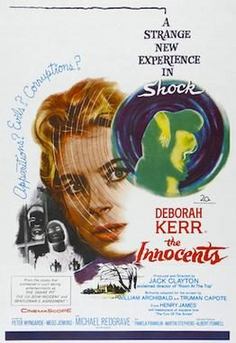

The Innocents
Starring: Deborah Kerr, Michael Redgrave, Peter Wyngarde
Director: Jack Clayton
Writer: William Archibald, Truman Capote, John Mortimer
Producer: Jack Clayton
The Innocents is a 1961 gothic psychological horror film directed and produced by Jack Clayton, and starring Deborah Kerr, Michael Redgrave, and Megs Jenkins. Based on the 1898 novella The Turn of the Screw by the novelist Henry James, the screenplay was adapted by William Archibald and Truman Capote, who used Archibald's own 1950 stage play—also titled The Innocents—as a primary source text.
Trivia
- Selected for the National Board of Review: Top Ten Films.
- Based on The Turn of the Screw (1898 novella by Henry James).
- Based on The Innocents (play written by William Archibald).
- The original screenplay for The Innocents was adapted by playwright William Archibald from his 1950 play of the same name, which itself was based on Henry James's novella The Turn of the Screw.
- In both his stage and screen adaptations, Archibald wrote under the assumption that the supernatural experiences of Miss Giddens were real, and that the ghosts she encountered were legitimate entities as opposed to figments of her imagination (a possibility left unresolved in James's original work).
- Director Jack Clayton envisioned a more ambiguous conclusion for the film: "My original interest in the story was in the fact that one could tell it from a completely different point of view," he said.
Filming Locations
- Interior sequences were shot on sound stages at Shepperton, as well as the sequences which took place in the greenhouse veranda; a façade for Bly house was also built by the art department on the studio lot.
- On-location exterior scenes were shot at the Gothic mansion of Sheffield Park in East Sussex.
Previous Showings
5 Runs • 4 Festivals
All runs on record (5):
- July 12 - 15, 1997w/ Suspicion
- November 12 - 13, 2005Fall 2005w/ Black Narcissus
- June 30 - July 2, 2009Summer 2009w/ Separate Tables
- February 18 - 19, 2017British and Lubitschw/ The Chalk Garden
- May 30 - 31, 2018Hitchcock and Other Masters of Suspense, plus Frankenstein at 200w/ The Haunting